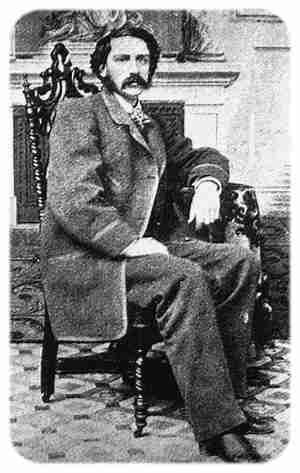

ParaBicychologie
- Accueil >>> index des traductions non cyclistes >>> Les Bannis de Poker Flat
La traduction ci-dessous est d'un texte de Bret Harte, écrivain et poète américain.

Bret Harte
Les Bannis de Poker Flat
(Les Bannis de Poker Flat - publié en 1865)
The Outcasts of Poker Flat - 1865. Texte original consultable en ligne ici : http://www.gutenberg.org/files/6373/6373-h/6373-h.htm#2H_4_0004
2015 traduit de l'anglais, par ef
Tous droits réservés.
Notre partenaire culture-Logic met ce titre à votre disposition à l'écoute en synthèse vocale - et téléchargeable au format mp3 - sur le site ARTE Radio (audioblog) : Les Bannis de Poker Flat / mp3
Les Bannis de Poker Flat
Alors que Mr. John Oakhurst, joueur et parieur, s'avançait dans la rue principale de Poker Flat, en ce matin du 23 novembre, de l'année 1850, il était conscient du changement qui y régnait depuis la nuit précédente, dans le climat ambiant de vertu. Deux ou trois hommes, qui conversaient sérieusement ensemble, cessèrent alors qu'il approchait, et échangèrent des regards significatifs. Il y avait dans l'air une accalmie de jour de Sabbath, ce qui, dans une communauté peu préoccupée des prescriptions du Sabbath, était de mauvais augure.
Le visage élégant, calme, de Mr. Oakhurst ne trahit que peu de préoccupation de ces indices. Qu'il fût au courant de quelque cause qui s'en trouvait à l'origine c'était une autre question. "Je suppose qu'ils sont après quelqu'un," pensa-t-il ; "c'est probablement moi." Il remis dans sa poche le mouchoir avec lequel il avait épousseté de ses bottes bien entretenues la poussière rouge de Poker Flat, et libéra tranquillement son esprit de la poursuite de ces conjectures.
De fait, Poker Flat était "après quelqu'un." Elle avait souffert dernièrement la perte de plusieurs milliers de dollars, deux chevaux de prix, et un éminent citoyen. Elle vivait sous le choc d'une réaction vertueuse, aussi anarchique et ingouvernable que n'importe lequel des actes qui l'avaient provoquée. Un comité secret avait décidé de débarasser la ville de toutes les personnes indécentes. Ce fut fait de façon définitive concernant deux hommes qui étaient en ce moment pendus aux branches d'un sycomore dans le vallon, et de façon provisoire par le bannissement de certaines autres personnes indésirables. Je regrette de dire que certaines d'entre elles étaient des femmes. C'est à cause du sexe, toutefois, qu'il avait été déclaré que leur indécence tenait à la nature de leur profession, et c'était seulement sur des normes du mal établies aussi à la légère que Poker Flat se hasardait à s'ériger en juge.
Mr. Oakhurst était dans le vrai en supposant qu'il était inclu dans cette catégorie. Quelques-uns du comité avaient exhorté à le pendre comme une sorte d'exemple et un moyen sur de se rembourser directement dans ses poches des sommes qu'il leur avait gagnées. "Ca va contre la justice," dit Jim Wheeler, "de laisser ce jeune homme de Roaring Camp - un complet étranger - emporter notre argent." Mais un sentiment rudimentaire d'équité résidant dans les coeurs de ceux qui avaient été suffisamment chanceux pour gagner contre Mr. Oakhurst infirma ce préjugé mesquin.
Mr. Oakhurst reçut sa sentence avec un calme philosophe, d'autant plus nonchalamment qu'il était au courant de l'hésitation de ses juges. Il était trop joueur pour ne pas accepter le destin. Avec lui la vie était au mieux un jeu incertain, et il admettait le pourcentage habituel en faveur de celui qui distribue les cartes.
Un groupe d'hommes armés accompagnait le péché qu'on déportait de Poker Flat, à l'extérieur de la communauté. En compagnie de Mr. Oakhurst, qui était connu pour être un homme tranquille prêt à tout, et que l'escorte armée était destinée à intimider, la partie expatriée consistait en une jeune femme connue familièrement comme "La Duchesse", une autre qui avait gagné le titre de "Mère Shipton," (NdT : dans cette acception, il s'agit en l'occurence d'une mère maquerelle, une patronne de bordel) et "Oncle Billy," suspect de vols dans les campements aurifères et ivrogne confirmé. La cavalcade n'attira aucun commentaire des spectacteurs, et aucun mot ne fut non plus prononcé par l'escorte. C'est seulement quand le ravin qui marquait l'extrême limite de Poker Flat fut atteint, que le chef parla brièvement et en allant directement au but. Les exilés avaient interdiction de revenir, au péril de leur vie.
Pendant que l'escorte disparaissait, leurs sentiments refoulés trouvèrent un exutoire sous la forme de quelques larmes hystériques de la Duchesse, quelques grossièretés de la Mère Shipton, et une volée de jurons incompréhensibles d'Oncle Billy. Seul le philosophe Oakhurst demeura silencieux. Il écouta calmement le désir de la Mère Shipton d'arracher le coeur de quelqu'un, les affirmations répétées de la Duchesse qu'elle mourrait sur la route, et les serments menaçants qui sortaient de la bouche d'Oncle Billy pendant qu'il progressait sur sa monture. Avec la bonne humeur facile caractéristique de son milieu, il insista pour échanger son propre cheval, "Five-Spot," pour la piteuse mule que montait la Duchesse. Mais même ce geste n'amena pas le groupe à sympathiser plus étroitement. La jeune femme redonna du volume aux plumes quelques peu applaties de son chapeau avec une coquetterie peu convaincante et falote, la Mère Shipton regarda avec malveillance le propriétaire de "Five-Spot", et Oncle Billy inclua toute la bande dans un même anathème.
La route pour Sandy Bar - un campement qui, n'ayant pas encore expérimenté les influences régénératrices de Poker Flat, semblait en conséquence offrir comme une invitation aux émigrants - se trouvait sur les pentes d'une montagne escarpée. Il était distant d'une journée de route difficile. En cette saison avancée le groupe passa des régions les plus tempérées des contreforts à l'air sec, froid, vivifiant des Sierras. Le chemin était étroit et difficile. A midi la Duchesse, descendant de selle et mettant pied à terre, déclara son intention de ne pas aller plus loin, et le groupe fit halte.
Le site était singulièrement sauvage et impressionnant. Un amphithéâtre boisé, entouré de trois côtés par des falaises abruptes de granite nu, en pende douce vers la crête d'un autre précipice qui dominait la vallée. C'était, sans aucun doute, l'endroit le plus approprié pour un campement, si camper avait été envisageable. Mais Mr. Oakhurst savait qu'à peine la moitié du chemin jusqu'à Sandy Bar avait été parcourue, et le groupe n'était pas équipé ni approvisionné pour se permettre de prendre du retard. Ce fait, il le mit en évidence brièvement à ses compagnons, avec un commentaire philosophe sur la folie de "lever les bras avant que la partie soit terminée." Mais ils étaient approvisionnés en liqueur, qui dans l'urgence leur tint lieu de nourriture, de carburant, de repos et de prescience. Malgré ses reproches , il ne fallut pas longtemps avant qu'ils fussent plus ou moins sous son influence. Oncle Billy passa rapidement de l'état belliqueux à celui de stupeur, la Duchesse devint sentimentale, et la Mère Shipton ronfla. Seul Mr. Oakhurst resta debout, appuyé contre une roche, les surveillant calmement.
Mr. Oakhurst ne buvait pas. Celà interférait avec une profession qui requérait calme, impassibilité, et présence d'esprit, et, selon ses propres mots, il "ne pouvait pas se le permettre." Comme il regardait ses compagnons d'exil allongés, la solitude engendrée par son métier de paria, ses habitudes de vie, ses vices mêmes, pour la première fois l'oppressèrent sérieusement. Il s'activa en époussetant ses vêtements noirs, nettoya ses mains et son visage, et autres rituels caractéristiques de ses strictes habitudes de bonne tenue, et pour un moment oublia ses préoccupations. L'idée d'abandonner ses compagnons plus faibles et plus pitoyables ne lui traversa peut-être jamais l'esprit.. Cependant il ne pouvait s'empêcher de ressentir le besoin de cette excitation qui, assez singulièrement, était plus propice à la calme sérénité pour laquelle il était bien connu. Il regarda les falaises sombres qui s'élevaient à mille pieds au-dessus du cercle de pins autour de lui, le ciel assombri inquiétant, la vallée en bas, déjà en train de s'enfoncer dans l'obscurité, et ce faisant, soudain, il entendit qu'on l'appelait par son propre nom.
Un cavalier montait lentement le chemin. Dans la figure fraîche, ouverte du nouveau venu Mr. Oakhurst reconnut Tom Simson, autrement connu comme "L'Innocent," de Sandy Bar. Il l'avait rencontré quelques mois avant dans une "petite partie," et avait, avec une parfaite égalité d'humeur, gagné l'entière fortune - s'élevant à environ quarante dollars - de ce naîf jeune homme. Après que la partie fut finie, Mr. Oakurst conduisit le jeune spéculateur derrière la porte et s'adressa à lui en ces termes : "Tommy, vous êtes un brave jeune homme, mais vous ne pouvez pas jouer même un centime. Ne recommencez pas ça." Puis il lui rendit son argent, le poussa gentiment hors de la pièce, et se fit ainsi de Tom Simson un dévoué esclave.
Il y avait un souvenir de cela dans son salut enfantin et enthousiaste à Mr. Oakhurst. Il avait entrepris disait-il d'aller à Poker Flat pour chercher fortune. "Seul?" Non, pas vraiment seul, en fait (il pouffa de rire) il s'était enfuit avec Piney Woods. Mr. Oakhurst ne se rappelait-il pas Piney ? Celle qui avait l'habitude d'attendre à la table du Bar Sans Alcool ? Ils étaient fiancés depuis longtemps, mais le vieux Jake Woods s'y était opposé, et alors ils s'étaient enfuis, et étaient en route pour Poker Flat pour se marier, et voilà pourquoi ils étaient ici. Et ils étaient fatigués, et quelle chance c'était qu'ils aient trouvé un endroit pour camper, et de la compagnie. Tout celà l'Innocent le débita rapidement, pendant que Piney, une robuste, avenante jeune fille de quinze ans, émergea de derrière un pin, où elle avait rougi inaperçue, et vint aux côtés de son amoureux.
Mr. Oakhurst n'était que rarement perturbé par les sentiments et encore moins par les convenances. Il conserva, cependant,, suffisamment sa présence d'esprit pour bousculer Oncle Billy, qui était sur le point de dire quelque chose, et Oncle Billy était suffisamment sobre pour reconnaitre dans le coup de Mr. Oakhurst un pouvoir supérieur qui ne tolèrerait par d'être défié. Il s'efforça alors de dissuader Tom Simson de prendre plus de retard, mais en vain. Il mit même en avant le fait qu'il n'y avait pas de provision, ni de moyen d'établir un campement. Mais, par malchance, l'Innocent repoussa cette objection en assurant le groupe qu'il était assisté par une autre mule chargée de provisions, et par la trouvaille après une recherche ardue, d'une maison en rondins près de la piste. "Piney peut rester avec Madame Oakhurst," dit l'Innocent, en désignant la Duchesse, "et je peux me débrouiller de mon côté."
Rien d'autre que la menace du pied de Mr. Oakhurst retint Oncle Bill d'éclater d'un hurlement de rire. Dans l'état où il était, il se sentit obligé d'aller à l'écart au canyon jusqu'à ce qu'il recouvre son calme. Là il confia la plaisanterie aux grands pins, avec moult claques sur les cuisses, contorsions de son visage, et la grossièreté habituelle. Mais quand il rejoignit le groupe, il les trouva assis autour d'un feu - car l'atmosphère était devenue singulièrement froide et le ciel s'était couvert - tenant une conversation apparemment amicale. Piney était en train de parler à la manière d'une jeune fille impulsive à la Duchesse, qui écoutait avec un intérêt et un entrain qu'elle n'avait pas montré depuis des jours. L'Innocent pérorait, apparemment avec le même résultat, à Mr. Oakhurst et la Mère Shipton, qui était en ce moment en train de se détendre aimablement. "Est-ce que c'est là un foutu picnic?" pensa Oncle Billy avec mépris, en voyant le groupe sylvestre, la lueur du feu, et au premier plan les animaux attachés. Soudain une idée se mêla avec les vapeurs d'alcool qui troublaient son cerveau. Elle était apparemment de nature facétieuse, car il se sentit poussé à se claquer encore les cuisses et se mordit le poing.
Alors que les ombres glissaient doucement vers le sommet de la montagne, une légère brise secoua le sommet des pins, et gémit à travers leurs allées longues et sombres. La cabane en ruine, rafistolée et recouverte avec des banches de pins, fut réservée pour les dames. Pendant que les amants se séparaient, sans affectation ils échangèrent un baiser, si franc et si sincère qu'il aurait pu être entendu par dessus les pins oscillants. La fragile Duchesse et la malveillante Mère Shipton étaient sans doute trop stupéfaites pour faire des remarques sur cette dernière preuve d'ingénuité, et ainsi se dirigèrent sans un mot vers la hutte. Le feu était réapprovisionné, les hommes étaient couchés devant la porte, et après quelques minutes furent endormis.
Mr. Oakhurst dormait peu. Vers le matin il se réveilla engourdi et froid. Alors qu'il réavivait le feu mourant, le vent, qui était maintenant en train de souffler fort, amena à ses joues ce qui leur glaça le sang : la neige!
Il se mit debout avec l'intention de réveiller les dormeurs, car il n'y avait pas de temps à perdre. Mais en se tournant vers où Oncle Billy avait été couché, il vit qu'il était parti. Un soupçon lui bondit à l'esprit, et une malédiction à ses lèvres. Il courut à l'endroit où les mules avaient été attachées ; elles n'étaient plus là. Les traces étaient déjà en train de disparaître rapidement sous la neige.
Cette excitation momentanée passée, Mr. Oakhurst retourna auprès du feu avec son calme habituel. Il ne réveilla pas les dormeurs. L'Innocent dormait paisiblement, avec un sourire sur son visage bon enfant, plein de taches de rousseur, la virginale Piney dormait à côté de ses fragiles soeurs avec autant de quiétude que si elle avait été protégée par des anges gardiens, et Mr. Oakhurst, remontant sa couverture sur ses épaules, caressa ses moustaches et attendit le lever du soleil. Il vint lentement dans un brouillard tourbillonnant de flocons de neige qui éblouissait et brouillait la vue. Ce qu'on pouvait voir du paysage apparut changé comme par magie. Il regarda la vallée, et additionna le présent et le futur en deux mots, "Pris dans la neige!"
Un inventaire minutieux des provisions, qui, par chance pour le groupe, avaient été entreposées dans la cabane, et ainsi avaient échappé aux doigts criminels d'Oncle Bill, démontra le fait qu'avec attention et circonspection, ils pourraient tenir dix jours de plus. "Ceci," dit Mr. Oakhurst sotto voice (NdT : à demi-voix) à l'Innocent, "si vous voulez bien nous prendre en pension. Si vous ne voulez pas - et peut-être feriez vous mieux - vous pouvez attendre jusqu'à ce qu'Oncle Bill revienne avec des provisions. "Pour quelque obscure raison, Mr. Oakhurst ne pouvait pas se résoudre à dévoiler la canaillerie d'Oncle Bill ; aussi proposait-il l'hypothèse qu'il était parti du camp au hasard et avait accidentellement libéré les animaux. Il adressa une mise en garde à la Duchesse et à la Mère Shipton, qui bien sûr étaient au courant de la défection de leur partenaire. "Quand ils se rendront compte, ils découvriront la vérité sur ce qui nous attend tous," ajouta-t-il significativement, "et à quoi bon de les effrayer maintenant."
Non seulement Tom Simson mit tout son stock séculier à la disposition de Mr.Oakhurst, mais sembla trouver du plaisir à l'idée de leur réclusion forcée. "On va bien camper pendant une semaine, puis la neige fondra, et nous rentrerons ensemble." La bonne humeur joyeuse du jeune homme et le calme de Mr. Oakhurst se propagèrent aux autres. L'Innocent, avec des branches de pin, improvisa du chaume pour la cabane sans toit, et la Duchesse guida Piney pour le réarrangement de l'intérieur avec un goût et un tact qui ouvrirent grand les yeux bleus de cette jeune fille de province. "Je crois maintenant que vous devez avoir l'habitude d'embellir les choses à Poker Flat," dit Piney. La Duchesse se détourna brusquement pour cacher la rougeur qui montait à ses joues en plus de leur coloration professionnelle, et la Mère Shipton demanda à Piney de ne pas bavarder. Mais quand Mr. Oakhurst rentra las d'avoir recherché le chemin; il entendit le son d'un rire heureux renvoyé par les roches. Il s'arrêta quelque peu alarmé, et ses pensées se tournèrent d'abord naturellement vers le whiskey, qu'il avait caché par prudence. "Et pourtant ça n'a pas l'air d'être comme avec le whiskey," dit le parieur. Ce ne fut que lorsqu'il aperçut le feu ardent à travers la tempête encore aveuglante, et le groupe autour de lui, qu'il se rendit à la conviction que c'était une "franche joie"
Que Mr. Oakhurst ait caché son jeu avec le whiskey comme quelque chose s'opposant au libre accès à la communauté, je ne peux le dire. Il est certain que, selon les propres mots de la Mère Shipton, il " ne dit pas une seule fois 'carte' " pendant cette soirée. Le temps fut suspendu avec bonheur par le fait d'un accordéon, exhibé avec une certaine ostentation de son sac par Tom Simson. Malgré quelques difficultés pour manipuler cet instrument, Piney Woods réussit à arracher de ses touches réticentes plusieurs mélodies, accompagnée par L'Innocent avec une paire de castagnettes en os. Mais le couronnement des festivités de cette soirée fut un chant simple de rassemblement campestre, que les amoureux, joignant les mains, chantèrent avec grand sérieux en vociférant. Je crains qu'un certain ton de défi et le rythme engageant de son refrain, plutôt qu'aucune qualité de piété, l'amena rapidement à être repris par les autres, qui finalement se joignirent au refrain :
"Je suis fier de vivre au service de Dieu, Et je suis honoré de mourir dans son armée."
Les pins étaient secoués, la tempête tournouyait et roulait au dessus du groupe misérable, et les flammes de leur autel bondissaient vers le ciel comme un gage de promesse.
A minuit, la tempête retomba, les nuages s'ouvrirent en se déroulant, et les étoiles brillèrent vivement au-dessus du camp endormi. Mr. Oakhurst, dont les habitudes professionnelles l'avaient endurci à vivre en dormant le minimum possible, s'arrangea en organisant la garde avec Tom pour s'attribuer la plus grande partie de ce devoir. Il se justifia lui-même envers l'Innocent en disant qu'il avait "souvent été une semaine sans dormir." "Fait quoi?" demanda Tom. "Poker!" répliqua Oakhurst sentencieusement. "Quand un homme est en veine, - une chance de nègre (NdT : a nigger-luck, expression mentionnée en 1851 dans le Dictionnary of American English, signifiant : une bonne chance. Ref : http://goo.gl/sFPdzu) - il ne sent pas la fatigue. La chance apporte en premier la Chance," continua le joueur pensivement, "c'est une chose étrange et puissante. Tout ce que vous savez de sûr à son sujet c'est qu'elle est changeante par nature. Et c'est de trouver quand elle va changer qui fait la différence. Nous avons eu une série de malchances depuis que nous avons quitté Poker Flat, vous arrivez, et vous y retrouvez en plein vous aussi. Si vous arrivez à conserver tout le temps vos cartes, vous allez bien. Car," ajouta le joueur, avec un joyeux manque de pertinence :
"Je suis fier de vivre au service de Dieu, Et je suis honoré de mourir dans son armée."
Le troisième jour arriva, et le soleil, regardant à travers la vallée voilée de blanc, vit les banis partageant leur stock de provisions qui diminuait lentement, pour le repas du matin. C'était une des particularités de ce climat de montagne que ses rayons diffusassent une douce chaleur sur le paysage venteux, comme avec une commisération pleine de regrets du passé. Mais il révéla congères de neige sur congères de neige empilés haut autour de la hutte, une mer de blancheur sans chemin, sans espoir, inexplorée, sous les falaises rocheuses auxquelles les naufragés se raccrochaient encore. A travers l'air merveilleusement clair la fumée du village bucolique de Poker Flat s'élevait à des miles au loin. La Mère Shipton le vit, et du haut de son solide sommet rocheux, lança dans sa direction une malédiction finale. Ce fut sa dernière tentative de révolte, et peut-être pour cette raison fut-elle investie d'un certain degré de sublime. Cela lui fit du bien, elle informa discrètement la Duchesse. "Sortez et injuriez, et regardez." Elle s'attela ensuite à la tâche d'amuser "l'enfant", comme elle et la Duchesse se plaisaient à appeller Pinez. Piney n'était pas une enfant, mais c'était une théorie nouvelle et réconfortante de la paire de considérer établi le fait qu'elle ne jurait pas et n'était pas indécente.
Quand la nuit recouvrit une nouvelle fois encore les gorges, les notes fluettes de l'accordéon s'élevèrent et s'évanouirent en spasmes capricieux et en longs soupirs sur le feu de camp vacillant. Mais la musique échoua à remplir entièrement le vide douloureux laissé par l'insuffisance de nourriture, et un nouveau divertissement fut proposé par Piney ; raconter des histoires. Ni Mr. Oakhurst ni ses compagnons féminins n'étant désireux de raconter leurs expériences personnelles, ce plan aurait échoué quand même, mais à cause de L'Innocent. Quelques mois avant il avait trouvé par hasard une copie qu'on avait égarée de la savante traduction de l'Illiade par Mr. Pope (NdT : Alexander Pope, .1688 - 1744, poète anglais ; a traduit l'Illiade et distribué cet ouvrage par souscription, entre 1715 et 1720. Référence http://en.wikipedia.org/wiki/Alexander_Pope). Il proposa à ce moment de narrer les principaux évènements de ce poème ; dans le langage vernaculaire courant de Sandy Bar. Et ainsi, pour le reste de cette nuit les demi-dieux homériques parcoururent encore la terre. Les grecs rusés en route contre Troie luttant dans les vents, et les grands pins dans le canyon semblaient se plier à la colère du fils de Pélée (NdT : dans la mythologie grecque, Pélée est le père d'Achille). Mr. Oakhurst écoutait avec une satisfaction tranquille. Il était plus particulièrement intéressé par le sort de "Ash-heels" (NdT : jeu de mot avec le nom Achille et ici désigné Ash-heels - talons de cendre - par L'Innocent) comme L'Innocent persistait à appeller "Achille au pied rapide."
Et, avec peu de nourriture et beaucoup d'Homère et avec l'accordéon, une semaine passa sur les têtes des exilés. Le soleil les abandonna à nouveau, et de nouveau, du ciel de plomb les flocons de neige recouvrirent la terre. Jour après jour, le cercle de neige se resserrait autour d'eux, jusqu'à ce que finalement de leur prison ils devaient regarder par-dessus des murs d'amoncellements de blancheur éblouissante, qui s'élevaient à vingt pieds (NdT : 6 mètres) au-dessus de leurs têtes. Il devint de plus en plus difficile de raviver leurs feux, même avec les arbres tombés près d'eux, maintenant à demi enterrés sous les congères. Et pourtant personne ne se plaignait. Les amoureux se détournaient de la triste perspective et se regardaient dans les yeux, et étaient heureux. Mr. Oakhurst considérait froidement le jeu perdant qui s'étalait devant lui. La Duchesse, plus gaie qu'elle ne l'avait été, assuma la protection de Piney. Seule la Mère Shipton - qui avait été la plus forte du groupe - semblait dégoûtée et fânée. A minuit, le dixième jour, elle appella Oakhurst à son côté. "Je m'en vais," dit elle, avec une voix de faiblesse plaintive, "mais n'en dîtes rien. Ne réveillez pas les jeunes. Prenez le paquet sous ma tête, et ouvrez-le." Mr. Oakhurst fit ainsi. Il contenait les rations de la Mère Shipton pour la semaine écoulée, intactes. "Donnez-les à la jeune," dit-elle, en désignant Piney endormie. "Vous vous êtes laissé mourir de faim," dit le joueur. "C'est ce qu'on dit," dit la femme querelleusement, en se réallongeant, et tournant son visage vers le mur, s'éteignit paisiblement.
L'accordéon et les os furent mis de côté ce jour, et Homère fut oublié. Une fois que le corps de la Mère Shipton fut inhumé dans la neige, Mr. Oakhurst conduisit l'Innocent à l'écart, et lui montra une paire de raquettes à neige, qu'il avait confectionnées à partir de l'ancien bât.
"Il y a encore une chance sur cent de la sauver," dit-il, désignant Piney, "mais c'est maintenant," ajouta-t-il, montrant Poker Flat. "Si vous pouvez le rejoindre en deux jour elle est sauvée."
"Et vous?" demanda Tom Simson. La réponse brève fut "je resterai ici." Les amoureux se séparèrent avec une longue étreinte.
"Vous ne partez pas aussi?" demanda la Duchesse, en voyant Mr. Oakhurst attendant apparemment pour l'accompagner. "Jusqu'au canyon," répliqua-t-il. Il se retourna brusquement et embrassa la Duchesse, laissant son visage pâle en feu, et ses membres raides d'étonnement.
La nuit vint, mais pas Mr. Oakhurst. Elle apporta encore la tempête et la neige tourbillonnante. Puis la Duchesse, activant le feu, découvrit que quelqu'un avait discrètement empilé à côté de la hutte suffisamment de combustible pour durer encore quelques jours. Les larmes lui montèrent aux yeux, mais elles les dissimula à Piney.
Les femmes dormirent mais peu. Le matin, se regardant réciproquement le visage, elles lurent leur sort. Aucune ne parla, mais Piney, endossant le role de la plus forte, s'approcha et prit dans ses bras la taille de la Duchesse. Elles restèrent ainsi le reste de la journée. Cette nuit, la tempête atteint une fureur plus grande encore, et, tombant en morceaux les buissons protecteurs envahirent même la cabane.
Vers le matin elles se retrouvèrent incapables d'alimenter le feu, qui peu à peu mourut. Comme les braises noircissaient lentement, la Duchesse se rapprocha de Piney et brisa un silence de plusieurs heures. "Pinez, pouvez vous prier?" "Non, mon amie," dit simplement Piney. La Duchesse, sans savoir exactement pourquoi, se sentit soulagée, et, appuyant sa tête sur l'épaule de Piney cessa de parler. Et ainsi inclinées, la plus jeune et la plus pure soutenant la tête de sa soeur impure sur sa poitrine virginale, elles s'endormirent.
Il y eut une accalmie du vent comme s'il craignait de les réveiller. Des poignées de neige comme des plumes tombèrent des longues branches de pin, voletant comme des oiseaux aux ailes blanches, et les recouvraient pendant qu'elles dormaient. La lune baissa les yeux à travers le ciel découvert, sur ce qui avait été le camp. Mais toute trace humaine, toute trace de peine terrestre étaient cachées sous le manteau miséricordieusement tombé du ciel.
Elles dormirent tout ce jour et tout le jour suivant, ni ne se réveillèrent quand des voix et des pas brisèrent le silence du camp. Et quand des doigts apitoyés écartèrent la neige de leurs faces blêmes, on n'aurait pu que difficilement dire, vu la même paix qui les enveloppait, quelle était celle qui avait pêché. Même la loi de Poker Flat reconnut ce fait, et se détourna, les laissant enlacées immobiles dans les bras l'une de l'autre.
C'est à l'entrée du ravin, sur un des plus haut pins, qu'ils trouvèrent le deux de trèfle cloué à l'écorce avec un bowie-knife. Il y était écrit ce qui suit, avec un crayon tenu d'une main ferme.
SOUS CET ARBRE SE TROUVE LA DÉPOUILLE DE JOHN OAKHURST, QUI A RENCONTRÉ UNE SÉRIE DE MALCHANCES LE 23 NOVEMBRE 1850, ET A RENDU LA MAIN LE 07 DÉCEMBRE 1850.
Sans pouls et froid, avec un Derringer à son côté et une balle dans le coeur, mais toujours serein comme dans la vie, reposait sous la neige celui qui fut à la fois le plus fort et pourtant le plus lâche des bannis de Poker Flat.
FIN
Website © Copyright - ef. Bicy Gonzo.